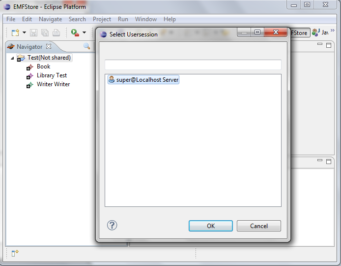

Follow the steps below to install the EMF Store.
Step 1: Get EclipseTo install the EMF Store, you need a running Eclipse. The easiest way to get started is to use the latest modeling edition.
Step 2: Installation using the update siteIn Eclipse, go to "Help >> Install New Software..." and add the EMF Store update site by clicking on the Add... button in the upper right corner. Enter an arbitrary name and get the URL from our downloads page.
Select all packages under EMFStore Core Features for installation.

Proceed in the installation wizard by repeatedly clicking Next until the installation starts. Midway through, you will get a warning message. Click OK to proceed.

In order to see the EMF Store in action, it is necessary to have a model to work with. If you already have your own model, you can skip this step. Otherwise, you can download this example model and add it to your workspace by importing the two model plug-ins contained in the zip file. To do that, select the wizard "Existing Projects into Workspace" in the Import dialog and use the option "Select archive file".
Step 4: Running the EMF StoreNow you can start the EMF Store by running a default Eclipse Application in the debug configurations.

In order to create an instance of the example model, which can be version with the EMF Store, you can use the EMF Client Platform (ECP). The EMF Client platform is contained in the "EMFStoreClientUI" Feature which is already installed. See Step 4 in the ECP documentation to learn how to create a project and a model.
Step 5: Share ProjectWhen you are finished with the project, you can share it from within the Navigator view, which will check-in the project into the EMF Store repository. Right-Click on the project and select Share Project

Now, a dialog pops-up asking to select the user session. Select the session and your project will be committed to the repository.

Alternative to Step 5: Share project using the EmfStore BrowserAlternatively to creating a project and sharing it, you can also create new projects in the repository directly.
In the new ECP runtime instance, add a new View by navigating to "Window >> Show View >> Other...", then select the view EmfStore Browser in the folder ECP.

You need to login in the EmfStore Browser view, using "right click on localhost [Localhost Server]>> Login" and then typing in the default password "super".


Now, you can create a new project by using "right click on localhost [Localhost Server]>> Create new project...".